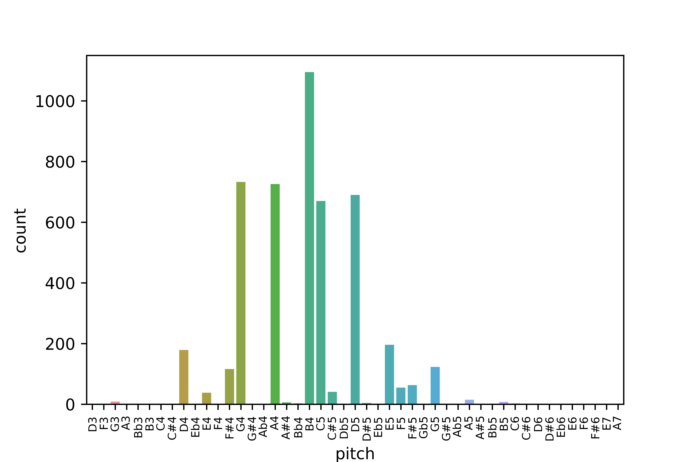
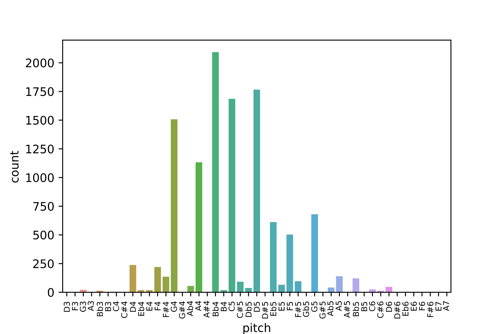
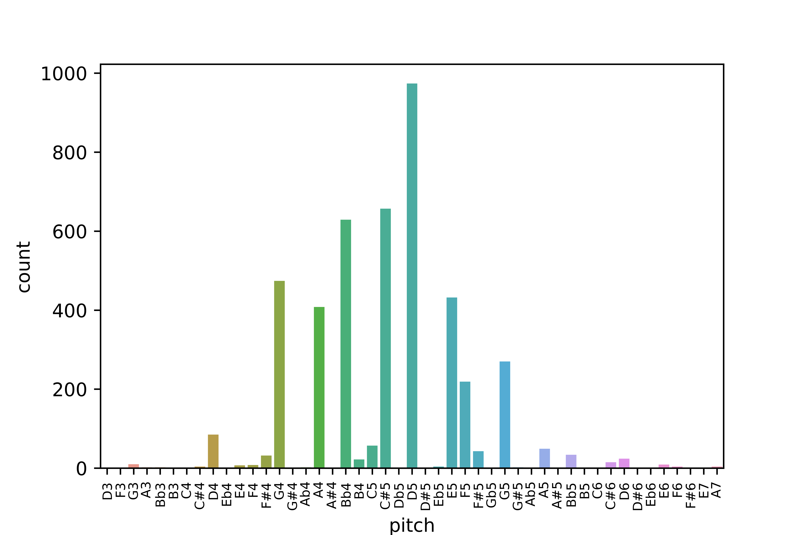
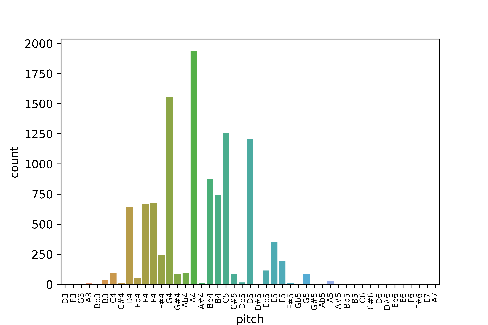

Analyses by Mode
Modes in Klezmer Music
Metadata and Analysis
Introduction
Complete Metadata and Mode Analysis
Beregovkski’s Metadata
Mode Analysis
Mode Data
Analyses by Mode
Melodic Tendencies
Downloadable Corpus
Downloadable Corpus
Analyses by Mode
The Beregovski Corpus
Major
G Major

G major pitch histogram
Minor
G minor

G minor pitch histogram
Freygish
All freygish pitch histogram
Raised Fourth

G raised fourth pitch histogram
The Meertens Tune Collection of Dutch Folksongs
Major
meertens major pitch histogram
Minor

meertens minor pitch histogram
Mode Analysis
Melodic Tendencies